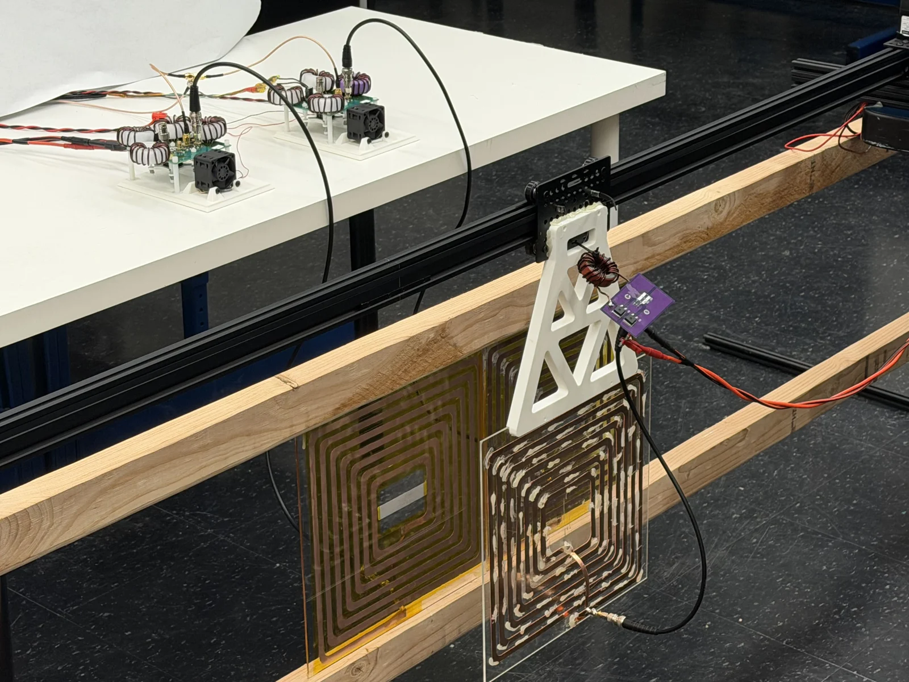

Seattle, WA / Electromechanical engineering
Daniel Yang From engineering models
I work across mechanical design, embedded systems and high-frequency power electronics. My background spans aircraft hydraulic systems and hands-on prototypes; my research at the University of Washington focuses on wireless power transfer.
danieltheyang97@gmail.com LinkedIn ↗ Seattle, WA MS · Electrical & Computer Engineering
BS · Mechanical Engineering

At the bench / Dynamic wireless power transfer, UW HiPER lab. Resume
The short version. Experience, education and technical background in one PDF.
Work experience Aerospace systems to manufacturing Boeing July 2023 - August 2025
Mechanical/Hydraulics Steering Systems Engineer Aircraft steering equipment, system safety assessments, technical investigations and supplier coordination.
June - August 2022
Mechanical/Hydraulics Steering Systems Engineer Intern Developed a MATLAB linkage model for steering actuator kinematics and quasi-static load analysis.
Honda Aircraft Company May - August 2021
Hydro/Landing Gear Systems Engineer Intern Designed a landing-gear test fixture from concept through fabrication coordination; developed fault-isolation documentation.
GE Appliances June - August 2020
Acoustic Competitive Benchmarking Analyzed recorded washer operating noise using spectrograms and structured benchmarking.
August - December 2019
Supply Chain Area Business Leader Supported assembly-line operations and contributed to team-led first-pass-yield improvements.
Continue exploring
The work behind